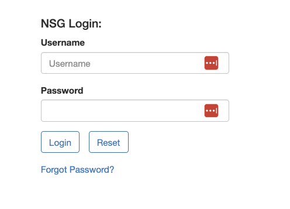

Submitting Jobs to Run on the CRI Hardware
The same Python scripts you’ve developed and run on your local machine can be deployed to the CRI servers to run on the actual CRI hardware. Just make sure all the libraries you import in your script are available on the CRI servers. The CRI hardware is hosted in the San Diego Supercomputing Center and jobs may be submitted to run on the hardware via the Neuroscience Gateway. First you must register an account with Neuroscience Gateway in order to submit jobs. Perform the following steps to submit a task to NSG
- Put your CRI Python script in a folder of any name, then zip the folder
- Log into NSG.

- Create a task folder if there is none listed on the upper left. It’s a place to hold related jobs.

- Click on data, and save the previously created zip file as the data. Here ‘data’ is ambiguous - it is the job and its data.
- Click on task.
- Create a new task if needed (or clone an old one).
- Assign the zip you just uploaded as data as the input to the task.
- Select Python for CRI as the software to run.
- Set parameters for the task:
- Set execution ‘wall time’, cores, and GB of DRAM if you wish. Please be consideret to others and only request the hardware you need.
- Enter the name of your.py python scrip as the “input” using the same name as is in the zip folder.
- Enter a name for the “output” (optional)
- Click save parameters
- Click save and run to run the task.
- Click OK on the popup or the job will not start.
- Click on task again in your folder at the upper left if the task list is not present.
- View status if desired, refresh as needed, or just watch for the task done email.
- When it is done select the ‘view output’ for that task on the task list.
- Download outputs and decompress. Job ‘inputs’ is displayed as garbage.
Python libraries installed on the CRI servers
| Library | Version |
|---|---|
| absl-py | 1.1.0 |
| bidict | 0.22.0 |
| brotlipy | 0.7.0 |
| certifi | 2021.10.8 |
| cffi | 1.15.0 |
| charset-normalizer | 2.0.4 |
| click | 8.1.3 |
| colorama | 0.4.4 |
| conda | 4.12.0 |
| conda-content-trust | 0+unknown |
| conda-package-handling | 1.8.1 |
| confuse | 1.7.0 |
| cri-simulations | 0.1.2 |
| cryptography | 36.0.0 |
| cycler | 0.11.0 |
| fbpca | 1.0 |
| fonttools | 4.33.3 |
| idna | 3.3 |
| joblib | 1.1.0 |
| k-means-constrained | 0.7.1 |
| kiwisolver | 1.4.3 |
| l2s | 0.1.3 |
| llvmlite | 0.38.1 |
| matplotlib | 3.5.2 |
| metis | 0.2a5 |
| networkx | 2.8.4 |
| numba | 0.55.2 |
| numpy | 1.22.4 |
| ortools | 9.3.10497 |
| packaging | 21.3 |
| Pillow | 9.1.1 |
| pip | 21.2.4 |
| protobuf | 4.21.1 |
| pycosat | 0.6.3 |
| pycparser | 2.21 |
| PyMetis | 2020.1 |
| pyOpenSSL | 22.0.0 |
| pyparsing | 3.0.9 |
| PySocks | 1.7.1 |
| python-dateutil | 2.8.2 |
| PyYAML | 6.0 |
| requests | 2.27.1 |
| ruamel-yaml-conda | 0.15.100 |
| scikit-learn | 1.1.1 |
| scipy | 1.8.1 |
| setuptools | 61.2.0 |
| six | 1.16.0 |
| sklearn | 0.0 |
| threadpoolctl | 3.1.0 |
| tqdm | 4.63.0 |
| urllib3 | 1.26.8 |
| wheel | 0.37.1 |